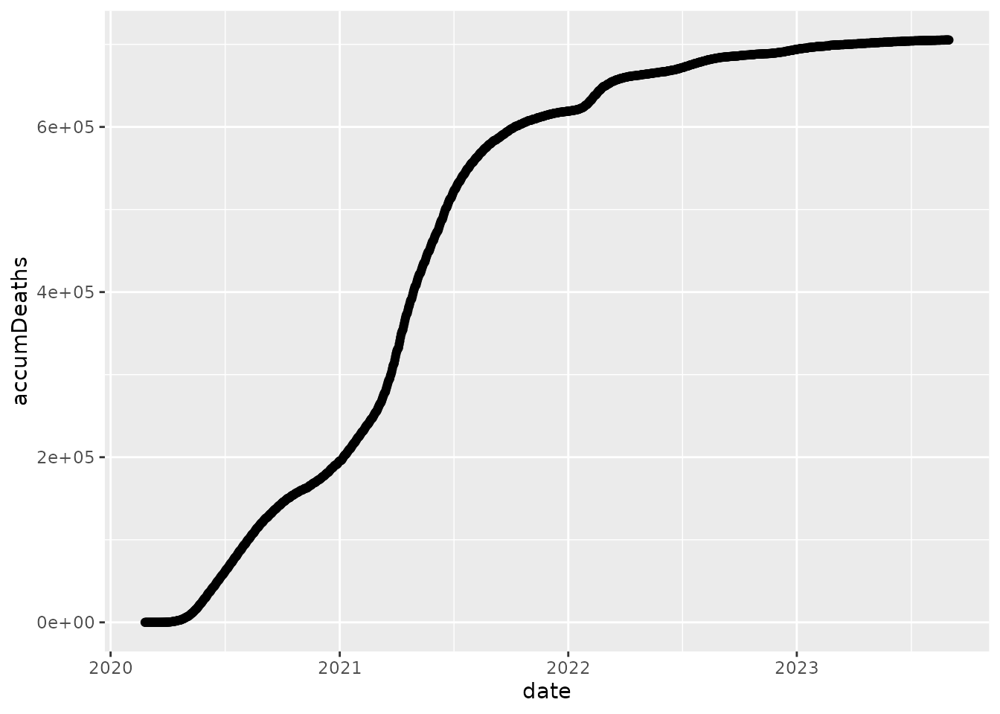

This vignette shows how to use the covid19br R package for downloading and exploring data from the COVID-19 pandemic in Brazil and the globe as well. The package downloads data bases from the following repositories:
The official brazilian repository provided by the brazilian government: https://covid.saude.gov.br;
The Johns Hopkins University’s repository: https://github.com/CSSEGISandData/COVID-19
The last repository has data on the COVID-19 pandemic in the global level (daily counts of confirmed cases, deaths and recovered patients by countries and territories), and has been widely used all over the world as a reliable source of data information on the COVID-19 pandemic. The former repository, on the other hand, possesses data on the Brazilian territory by city, state, region and national levels.
We hope that this package may be helpful to other researchers and scientists to understand and fight this terrible epidemic that has been plaguing the world.
The development version of the R package covid19br can be found at github.com/fndemarqui/covid19br, and it can be installed using the following command line in R: devtools::install_github(“fndeamrqui/covid19br”).
The installation procedure described abouve requires the package devtools to be previously installed in R.
We will get started by showing how to use the package to load into R data sets of the COVID-19 pandemic by downloading the COVID-19 data set from the official Brazilian repository https://covid.saude.gov.br
library(covid19br)
library(tidyverse)
brazil <- downloadCovid19("brazil")
ggplot(brazil, aes(x = date, y = accumDeaths)) +
geom_point() +
geom_path()